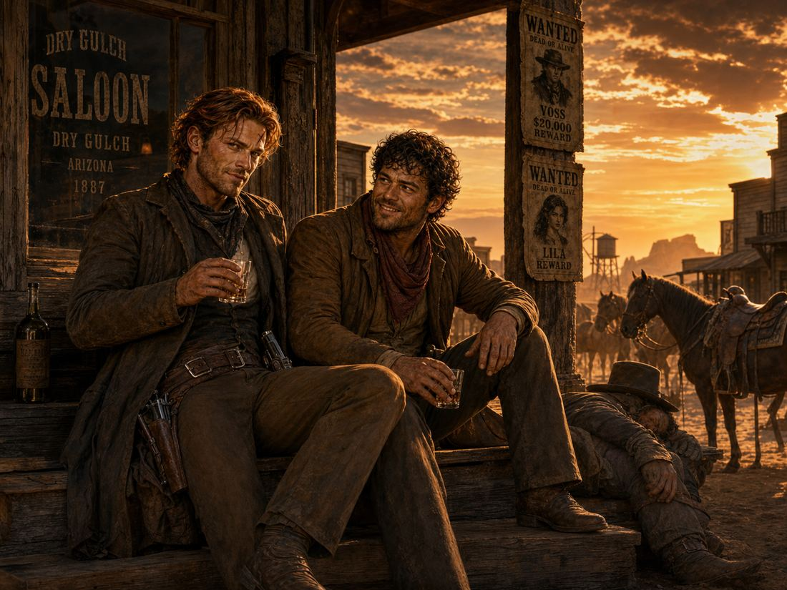
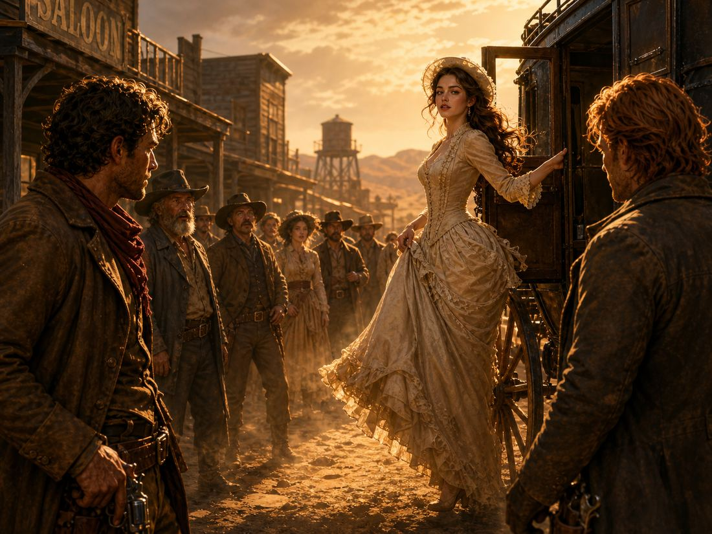
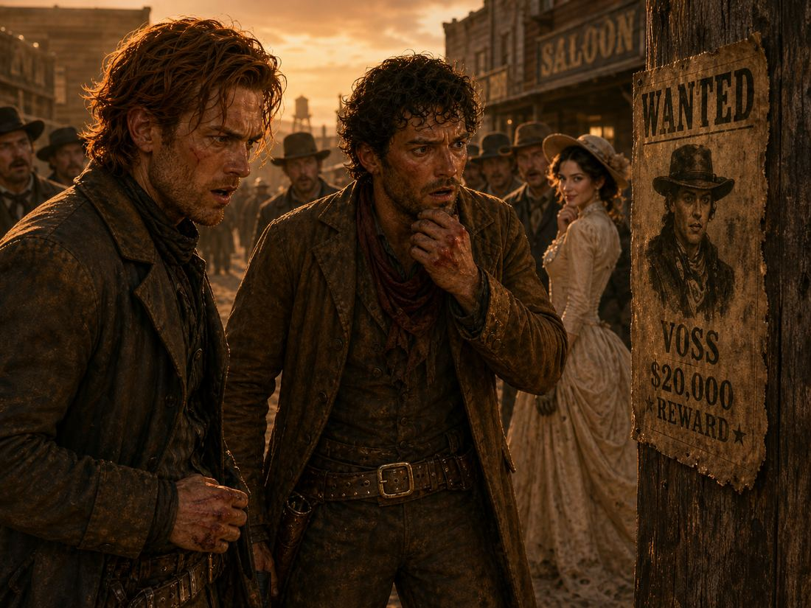

The False Fawn of Dry Gulch
In the sunbaked dust of Dry Gulch, where saloon doors creaked day and night and wanted posters curled at the edges, two cowboys at the top of the bounty-hunting world sat drinking and laughing. They were Cole and Toby.
Cole was tall and lean, with auburn hair, a light stubble covering his jaw, and a scar across his forehead, earned years ago when he stopped a gang of robbers. He moved silent as a ghost, quick on the draw, sharp-tongued but steady, always thinking three steps ahead and never missing a shot. He wore a dust-brown coat, scuffed boots, and a revolver worn smooth from constant use.
Toby was his trusted partner of many years. Broad-shouldered and warm-faced, with curly dark brown hair and eyes that crinkled when he smiled. Strong, calm, and soft-spoken, he was the steady muscle to Cole’s wit, patching up wounds, sharing his last biscuit, and never letting his partner come to harm.
Together they were unstoppable. They tracked outlaws side by side, split bounties fairly, covered each other in gunfights, and drank together at sunset. The whole town called them the Dry Gulch Twins, even though they shared no blood. No bounty was too tough for them — they were the finest team around.

Then one day, her arrival nearly shattered their unbreakable bond.
Under the scorching sun, she stepped down from the carriage like a beauty from a dream. Slender and graceful, with long chestnut hair falling over her shoulders, sun-kissed skin, pale rose-tinted lips, and deep, clear honey eyes that made every man who met her gaze fall for her. She wore a pale cream dress that fluttered in the wind, a small bonnet, and silk-fitting gloves. Her voice was low and sweet, and every word left men breathless, leaning in to listen.
She said her name was Lila — wandering alone, helpless, and in desperate need of protection.

Cole fell first. The sharp, unshakable cowboy softened at the sound of her voice, his fierce eyes growing gentle whenever he looked at her. Toby soon followed. The kind, steady cowboy offered to carry her bags, walk her to the general store, and keep rough strangers away from her.
And the two cowboys fell in love with the same person.
That was how their unbreakable brotherhood cracked overnight.
They bickered over small things, their glances turned cold, and their jokes turned sharp. What was once perfect teamwork curdled into jealousy over this woman. They stopped riding together. Stopped talking. Stopped watching each other’s backs.
One evening outside the saloon, their long-simmering resentment finally erupted — throwing angry, foolish punches over a woman who had barely spoken to either of them. The town watched in shock as their two greatest heroes fought in the dirt over a stranger.
Just then, a new wanted poster went up.
Tacked to the post office wall, the ink still shiny: a fugitive wanted for theft and fraud across three territories, with a twenty-thousand-dollar reward.
The name on the paper: Voss.
The face beneath it turned their blood cold.

It was Lila.
But not Lila.
Behind the dress, the hair, the soft voice and gentle eyes was a man.
According to the notice, Voss was a master of disguise. He dressed as a woman, wore a wig, painted his face, and altered his features to fool every town he robbed. He charmed men out of their money, trust, and loyalty, then vanished before they realized they’d been played. The delicate lady they’d fought over was a ruthless con artist wrapped in silk and lies. The “beauty” that broke their friendship was nothing but a carefully crafted costume.
Cole and Toby stared at the poster, then at each other, their knuckles still bruised from fighting.
Embarrassment, shame, and foolishness burned inside them. But deep down, their old bond stirred — quiet, stubborn, still there.
No words were needed.
Cole spat in the dust. Toby scratched the back of his head repeatedly.
“You’re an idiot,” Cole muttered.
“Not any worse than you,” Toby replied.
No apologies. No arguments. They looked at each other and let out a bitter, shared laugh at how easily they’d been tricked.
After a short silence:
“You wanna play a game?” Cole asked Toby.
“What game?”
“A ghost hunt. And we are hunters, as for the ghost…”
That same day, they saddled their horses.
Coats dust-streaked, jaws set, hands resting easily on their revolvers. Jealousy was gone. Anger was gone. Only their old partnership remained — sharp, steady, unbroken.
Voss had fooled them once.
He would not fool them again.
Side by side, the two cowboys rode out of Dry Gulch, chasing the con man in a dress.
The trail was cold, but their determination burned hotter.
This time, they would not be fooled by a pretty face.